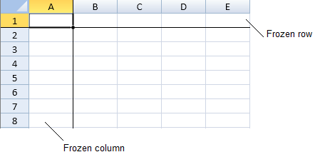
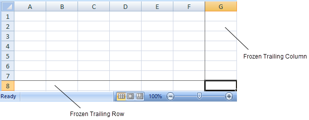
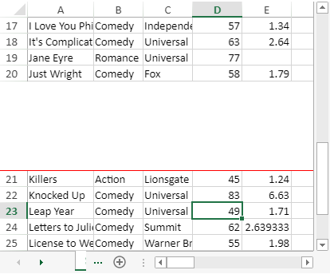
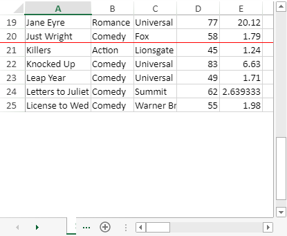

You can specify whether to have frozen rows or columns or both in a sheet. Frozen columns and rows do not scroll.
A line is displayed below frozen rows and to the right of frozen columns. You can specify the color of the line with the options.frozenlineColor property.

Frozen rows stay at the top of the sheet and frozen columns stay on the left of the sheet.
This example sets the first row and column as frozen row and column.
| JavaScript |
Copy Code
|
|---|---|
activeSheet.frozenRowCount(1);
activeSheet.frozenColumnCount(1);
//activeSheet.options.frozenlineColor = "red";
|
|
You can specify whether to have frozen trailing rows or columns or both in a sheet by using the frozenTrailingRowCount and frozenTrailingColumnCount functions. Frozen trailing rows or columns remain visible while scrolling the sheet.
A line is displayed above frozen trailing rows and to the left of frozen trailing columns. You can set the color of the line by using options.frozenlineColor property.

By default, when the height of data rows and frozen trailing rows is equal to or greater than the viewport area, the frozen trailing rows are displayed at the extreme bottom of the viewport area. The same holds true for the frozen trailing columns which are displayed at the extreme right of the viewport area.
However, when the height of data rows and frozen trailing rows is less than that of the viewport area, you can choose whether to display the blank space between the data rows and frozen trailing rows or not. The stickToEdge parameter of frozenTrailingRowCount and frozenTrailingColumnCount functions can be used to control this behavior as shown in the image below:
| When stickToEdge = True (defaut value) | When stickToEdge = False |
|---|---|
|  |  |
Similarly, you can also choose whether to display the blank space between the data columns and frozen trailing columns or not by using stickToEdge parameter.
This example sets the frozen trailing row and a frozen trailing column with stickToEdge parameter set to False.
| JavaScript |
Copy Code
|
|---|---|
activeSheet.frozenTrailingRowCount(1, false); activeSheet.frozenTrailingColumnCount(1, false); //activeSheet.options.frozenlineColor = "red"; |
|